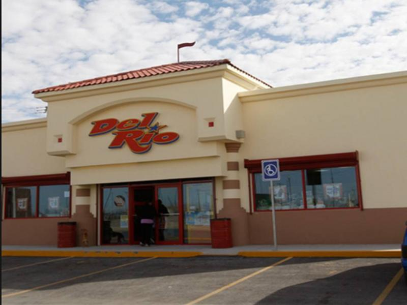

 Ser líderes en el mercado de tiendas de conveniencia, satisfaciendo las necesidades básicas de la comunidad a través de una comercialización de productos de calidad a precios competitivos, buscando ubicaciones cercanas a nuestra clientela, ofreciendo un servicio excelente y rápido en un ambiente agradable y limpio, con el fin de tener un negocio rentable. Asimismo, ser fuente de empleo, generando oportunidades de desarrollo y carrera al sector productivo, contribuyendo con ello a elevar la calidad de vida de la comunidad.
La experiencia que hemos adquirido en el mercado nos facilita entender las necesidades de nuestros clientes y nos compromete a proveerles las soluciones más adecuadas y la asesoría necesaria para su implementación.
Al día de hoy, la Lic. Guadalupe de la Vega Arizpe dirige esta empresa. Actualmente contamos con 287 sucursales en el estado de Chihuahua, México: 213 sucursales Del Río, 22 Del Río Express, 33 Superette, 17 Oasis y 2 Almacén Del Río.